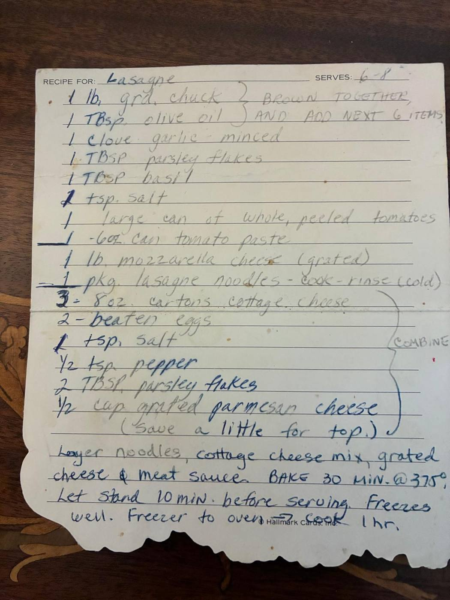

Mains
Lasagne
From the kitchen of Mom
Oven375°F
Bake30 min
Dish13×9 casserole
Serves6–8

Mom's original card · tap to enlarge
Ingredients
Meat sauce
Cheese mixture
Also
Method tap a step to mark it done
- Brown the ground chuck in the olive oil, then add the garlic, parsley, basil, salt, tomatoes and tomato paste. Simmer uncovered.
- Cook the noodles and rinse them in cold water.
- Combine the cottage cheese, eggs, salt, pepper, parsley and Parmesan (save a little Parmesan for the top).
- In a 13×9 casserole dish, layer noodles, cottage cheese mixture, mozzarella and meat sauce. Repeat, then sprinkle the saved Parmesan on top.
- Bake at 375°F for 30 minutes.
- Let stand 10 minutes before serving.
Mom’s tips
- Freezes well. Freezer to oven: cook 1 hr.